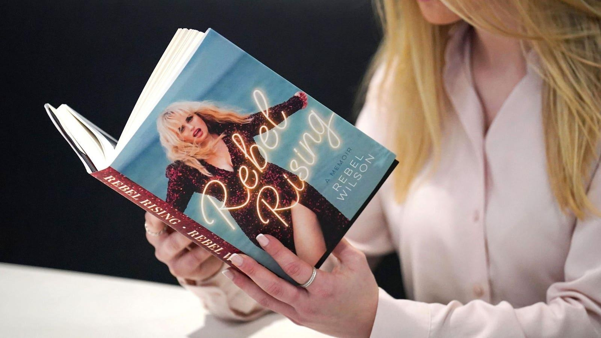

Pieces Of Rebel Wilson’s Memoir Blasting Sacha Baron Cohen Redacted OverseasTopline Copies of actress Rebel Wilson’s memoir "Rebel Rising" that have hit shelves in the United Kingdom were published with large swaths of black ink removing claims she made about the behavior of fellow comedian Sacha Baron Cohen on the set of a movie they made together almost a decade ago, a move that comes after the actor blasted the allegations as “demonstrably false.” Key Facts "Rebel Rising" hit shelves in the United Kingdom on Thursday with all allegations of on-set harassment by Baron Cohen redacted, the BBC reported, the same treatment the book will receive in Australia and New Zealand when it publishes on May 8 without the entire chapter mentioning the actor, according to The Guardian. The book released in its entirety in the United States last month and included a story Wilson had told before about behavior on the set of “The Brothers Grimsby," where she alleges Baron Cohen made her uncomfortable by repeatedly asking her to appear naked in the film and asking “Rebel, can you just stick your finger up my butt?” for a comedic bit. In an Instagram post Thursday, the day after a book event in Edinburgh, Wilson posted to Instagram Stories that she wanted to “thank all of the people who have come forward and acknowledged my experiences with Sacha Baron Cohen.” Her attorney, Bryan Freedman, added in a statement to Forbes that he and the actress wanted to thank other women who’d shared their experiences with Cohen and said they “are grateful for their strength and bravery.” Key Background Last month, Wilson teased the then-upcoming release of her book with a post to Instagram asking fans “Do you wanna know why I have a ‘no a—holes’ policy now with people I work with? Well it’s all in the book… oh and YES I name the a—hole!” Days later, she followed up with an Instagram Story post saying she would “not be bullied or silenced by high price lawyers or PR crisis managers. The ‘a—hole’ I am talking about in ONE CHAPTER of my book is: Sacha Baron Cohen,” she posted. In older posts, Wilson had alleged a then-unnamed person was "trying to threaten me” and “trying to stop press coming out about my new book.” A spokesperson for Cohen, who refused to be named, at the time called the claims “demonstrably false” and said there was film footage, eyewitness accounts and documents to prove Wilson's story never happened. |
 |